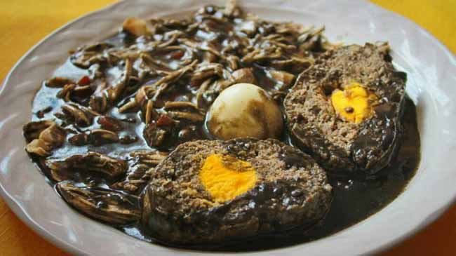

Black Relleno
Description
Affectionately and appropriately called "black dinna" (black dinner), this dish serves as a special treat. It uses special spices and an array of protein including pork, chicken, and eggs. Bursting with flavor in every bite, it's sure to become a family favorite.
Ingredients
- 1 whole chicken (4 -5 lbs.)
- 3 lbs.ground pork
- 1 dozen eggs
- 1 medium-sized onion
- 8 leaves oregano
- 1 pkg. Chimole seasoning OR 8-10 slices burnt bread
- 14 spice seeds
- 1 tbsp. annato grains OR 4 balls red recado
- 8 plugs garlic
- 1 sprig apasote or fresh oregano
- 1 tsp. whole black pepper
- 1 tsp. cumin seeds
- 10 whole cloves
- 0.5 lb. fresh tomatoes
- 6 burnt peppers
Method:
- Season Chicken with salt, pepper, and Grace vinegar.
- Boil 9 eggs until hard.
- Cut egg whites into small pieces.
- Grind all seasonings into a fine powder.
- Mix salt (to preference) and 2 tbsp. ground seasoning with pork.
- Cook ground pork on medium heat for 30-40 minutes then take off heat and leave to cool.
- When ground pork has cooled, add 3 raw eggs and mis well.
- Stuff chicken with pork mixture and halved hard-boiled egg yolks.
- Mix 2 cups water and remaining seasonings and strain into large covered pot.
- Add chicken, giblets, apasote, and more water to cover.
- Boil until chicken is tender then add chopped tomatoes and chopped, hard-boiled egg whites.
- Thicken gravy with 0.5 cup flour mixed with 1 cup water.
- Enjoy with a side of fresh corn tortillas.